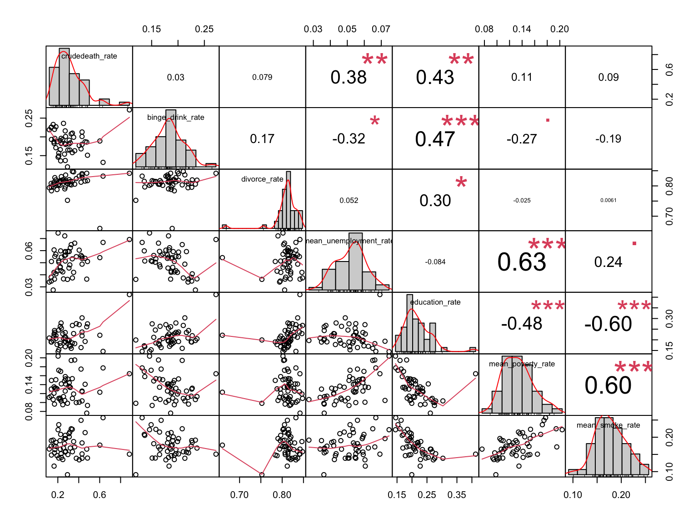
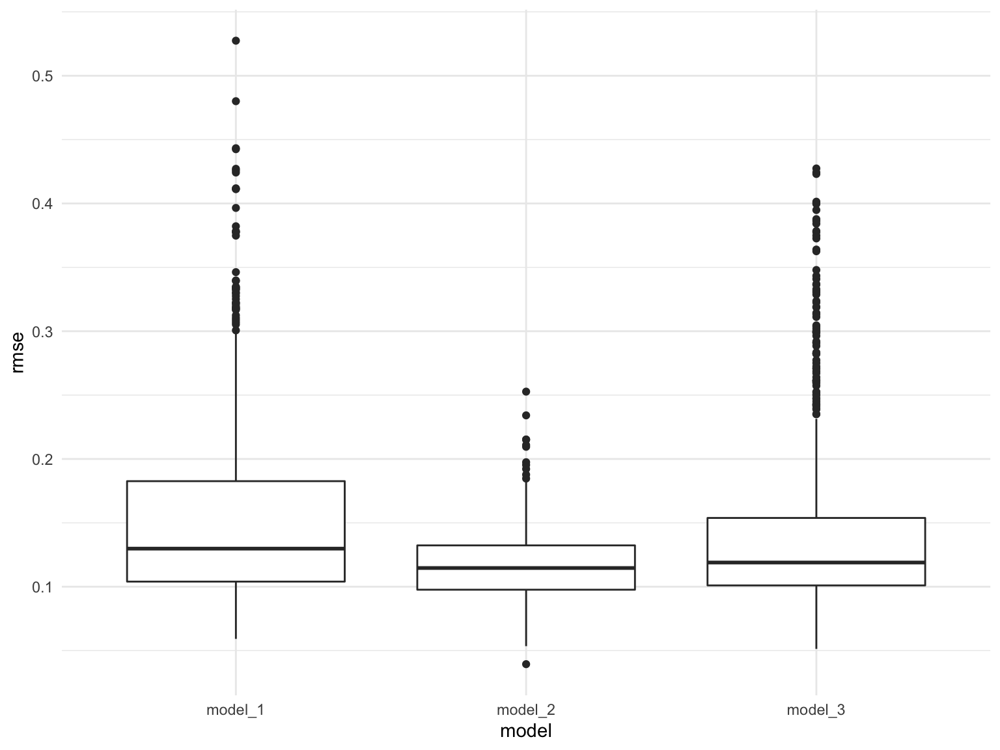

poverty_2015 =
read_csv("data_regression_us/povety/poverty_us_2015.csv") %>%
select(NAME, S1701_C03_001E)
poverty_2015 =
poverty_2015[-1,] %>%
mutate(
poverty_population_2015 = as.numeric(S1701_C03_001E),
state = NAME
) %>%
select(-c(NAME, S1701_C03_001E)) %>%
relocate(state)
poverty_2016 =
read_csv("data_regression_us/povety/poverty_us_2016.csv") %>%
select(NAME, S1701_C03_001E)
poverty_2016 =
poverty_2016[-1,] %>%
mutate(
poverty_population_2016 = as.numeric(S1701_C03_001E),
state = NAME
) %>%
select(-c(NAME, S1701_C03_001E)) %>%
relocate(state)
poverty_2017 =
read_csv("data_regression_us/povety/poverty_us_2017.csv") %>%
select(NAME, S1701_C03_001E)
poverty_2017 =
poverty_2017[-1,] %>%
mutate(
poverty_population_2017 = as.numeric(S1701_C03_001E),
state = NAME
) %>%
select(-c(NAME, S1701_C03_001E)) %>%
relocate(state)
poverty_2018 =
read_csv("data_regression_us/povety/poverty_us_2018.csv") %>%
select(NAME, S1701_C03_001E)
poverty_2018 =
poverty_2018[-1,] %>%
mutate(
poverty_population_2018 = as.numeric(S1701_C03_001E),
state = NAME
) %>%
select(-c(NAME, S1701_C03_001E)) %>%
relocate(state)
poverty_2019 =
read_csv("data_regression_us/povety/poverty_us_2019.csv") %>%
select(NAME, S1701_C03_001E)
poverty_2019 =
poverty_2019[-1,] %>%
mutate(
poverty_population_2019 = as.numeric(S1701_C03_001E),
state = NAME
) %>%
select(-c(NAME, S1701_C03_001E)) %>%
relocate(state)
poverty_overall =
join_all(list(poverty_2019, poverty_2018, poverty_2017, poverty_2016, poverty_2015))
poverty_overall =
poverty_overall %>%
mutate(sum_of_rows = rowSums((poverty_overall[,2:6]), na.rm = TRUE),
mean_poverty_rate = 0.01 * sum_of_rows/5) %>%
select(state, mean_poverty_rate)population_us =
read_csv("data_regression_us/population/ACSDT5Y2019.B01003_data_with_overlays_2021-11-16T170855.csv")
population_us =
population_us[-1,] %>%
mutate(
state = NAME,
population = as.numeric(B01003_001E)
) %>%
select(state, population)education_2015 =
read_csv("data_regression_us/education/education_us_2015.csv")
education_2015 =
education_2015[-1,] %>%
select(B15003_022E, B15003_023E, B15003_024E, B15003_025E, NAME) %>%
mutate(
number_bachelor = as.numeric(B15003_022E),
number_master = as.numeric(B15003_023E),
number_profesional = as.numeric(B15003_024E),
number_doctor = as.numeric(B15003_025E),
state = NAME
) %>%
select(state, number_bachelor, number_master, number_profesional, number_doctor) %>%
mutate(sum_high_educ_2015 = number_bachelor + number_master + number_profesional + number_doctor) %>%
select(state, sum_high_educ_2015)
education_2016 =
read_csv("data_regression_us/education/education_us_2016.csv")
education_2016 =
education_2016[-1,] %>%
select(B15003_022E, B15003_023E, B15003_024E, B15003_025E, NAME) %>%
mutate(
number_bachelor = as.numeric(B15003_022E),
number_master = as.numeric(B15003_023E),
number_profesional = as.numeric(B15003_024E),
number_doctor = as.numeric(B15003_025E),
state = NAME
) %>%
select(state, number_bachelor, number_master, number_profesional, number_doctor) %>%
mutate(sum_high_educ_2016 = number_bachelor + number_master + number_profesional + number_doctor) %>%
select(state, sum_high_educ_2016)
education_2017 =
read_csv("data_regression_us/education/education_us_2017.csv")
education_2017 =
education_2017[-1,] %>%
select(B15003_022E, B15003_023E, B15003_024E, B15003_025E, NAME) %>%
mutate(
number_bachelor = as.numeric(B15003_022E),
number_master = as.numeric(B15003_023E),
number_profesional = as.numeric(B15003_024E),
number_doctor = as.numeric(B15003_025E),
state = NAME
) %>%
select(state, number_bachelor, number_master, number_profesional, number_doctor) %>%
mutate(sum_high_educ_2017 = number_bachelor + number_master + number_profesional + number_doctor) %>%
select(state, sum_high_educ_2017)
education_2018 =
read_csv("data_regression_us/education/education_us_2018.csv")
education_2018 =
education_2018[-1,] %>%
select(B15003_022E, B15003_023E, B15003_024E, B15003_025E, NAME) %>%
mutate(
number_bachelor = as.numeric(B15003_022E),
number_master = as.numeric(B15003_023E),
number_profesional = as.numeric(B15003_024E),
number_doctor = as.numeric(B15003_025E),
state = NAME
) %>%
select(state, number_bachelor, number_master, number_profesional, number_doctor) %>%
mutate(sum_high_educ_2018 = number_bachelor + number_master + number_profesional + number_doctor) %>%
select(state, sum_high_educ_2018)
education_2019 =
read_csv("data_regression_us/education/education_us_2019.csv")
education_2019 =
education_2019[-1,] %>%
select(B15003_022E, B15003_023E, B15003_024E, B15003_025E, NAME) %>%
mutate(
number_bachelor = as.numeric(B15003_022E),
number_master = as.numeric(B15003_023E),
number_profesional = as.numeric(B15003_024E),
number_doctor = as.numeric(B15003_025E),
state = NAME
) %>%
select(state, number_bachelor, number_master, number_profesional, number_doctor) %>%
mutate(sum_high_educ_2019 = number_bachelor + number_master + number_profesional + number_doctor) %>%
select(state, sum_high_educ_2019)education_overall =
join_all(list(education_2019, education_2018, education_2017, education_2016, education_2015))
education_overall =
education_overall %>%
mutate(sum_of_rows = rowSums((education_overall[,2:6]), na.rm = TRUE),
mean_educ = sum_of_rows/5) %>%
select(state, mean_educ)education_rate =
left_join(education_overall, population_us) %>%
mutate(education_rate = mean_educ / population) %>%
select(state, education_rate)load the unemployment 2015-2019
unemployment_2015 =
read_csv("data_regression_us/unemployment/unemployment_2015.csv")
unemployment_2015 =
unemployment_2015[-1,] %>%
select(NAME, S2301_C04_001E) %>%
mutate(
unemployment_rate_2015 = as.numeric(S2301_C04_001E),
state = NAME
) %>%
select(state, unemployment_rate_2015)
unemployment_2016 =
read_csv("data_regression_us/unemployment/unemployment_2016.csv")
unemployment_2016 =
unemployment_2016[-1,] %>%
select(NAME, S2301_C04_001E) %>%
mutate(
unemployment_rate_2016 = as.numeric(S2301_C04_001E),
state = NAME
) %>%
select(state, unemployment_rate_2016)
unemployment_2017 =
read_csv("data_regression_us/unemployment/unemployment_2017.csv")
unemployment_2017 =
unemployment_2017[-1,] %>%
select(NAME, S2301_C04_001E) %>%
mutate(
unemployment_rate_2017 = as.numeric(S2301_C04_001E),
state = NAME
) %>%
select(state, unemployment_rate_2017)
unemployment_2018 =
read_csv("data_regression_us/unemployment/unemployment_2018.csv")
unemployment_2018 =
unemployment_2018[-1,] %>%
select(NAME, S2301_C04_001E) %>%
mutate(
unemployment_rate_2018 = as.numeric(S2301_C04_001E),
state = NAME
) %>%
select(state, unemployment_rate_2018)
unemployment_2019 =
read_csv("data_regression_us/unemployment/unemployment_2019.csv")
unemployment_2019 =
unemployment_2019[-1,] %>%
select(NAME, S2301_C04_001E) %>%
mutate(
unemployment_rate_2019 = as.numeric(S2301_C04_001E),
state = NAME
) %>%
select(state, unemployment_rate_2019)unemployment_overall =
join_all(list(unemployment_2019, unemployment_2018, unemployment_2017, unemployment_2016, unemployment_2015))
unemployment_overall =
unemployment_overall %>%
mutate(sum_of_rows = rowSums((unemployment_overall[,2:6]), na.rm = TRUE),
mean_unemployment_rate = 0.01 * sum_of_rows/5) %>%
select(state, mean_unemployment_rate)load the divorce count data from 2015-2019
divorce_2015 =
read_csv("data_regression_us/divorce/divorce_number_2015.csv")
divorce_2015 =
divorce_2015[-1,] %>%
select(NAME, B12503_001E) %>%
mutate(
divorce_num_2015 = as.numeric(B12503_001E),
state = NAME
) %>%
select(state, divorce_num_2015)
divorce_2016 =
read_csv("data_regression_us/divorce/divorce_number_2016.csv")
divorce_2016 =
divorce_2016[-1,] %>%
select(NAME, B12503_001E) %>%
mutate(
divorce_num_2016 = as.numeric(B12503_001E),
state = NAME
) %>%
select(state, divorce_num_2016)
divorce_2017 =
read_csv("data_regression_us/divorce/divorce_number_2017.csv")
divorce_2017 =
divorce_2017[-1,] %>%
select(NAME, B12503_001E) %>%
mutate(
divorce_num_2017 = as.numeric(B12503_001E),
state = NAME
) %>%
select(state, divorce_num_2017)
divorce_2018 =
read_csv("data_regression_us/divorce/divorce_number_2018.csv")
divorce_2018 =
divorce_2018[-1,] %>%
select(NAME, B12503_001E) %>%
mutate(
divorce_num_2018 = as.numeric(B12503_001E),
state = NAME
) %>%
select(state, divorce_num_2018)
divorce_2019 =
read_csv("data_regression_us/divorce/divorce_number_2019.csv")
divorce_2019 =
divorce_2019[-1,] %>%
select(NAME, B12503_001E) %>%
mutate(
divorce_num_2019 = as.numeric(B12503_001E),
state = NAME
) %>%
select(state, divorce_num_2019)divorce_overall =
join_all(list(divorce_2019, divorce_2018, divorce_2017, divorce_2016, divorce_2015))
divorce_overall =
divorce_overall %>%
mutate(sum_of_rows = rowSums((divorce_overall[,2:6]), na.rm = TRUE),
mean_divorce_num = sum_of_rows/5) %>%
select(state, mean_divorce_num)divorce_rate =
left_join(divorce_overall, population_us) %>%
mutate(divorce_rate = mean_divorce_num / population) %>%
select(state, divorce_rate)state_level = c(state.name[1:8], "District of Columbia", state.name[9:50])
drinking_19 =
read_excel("./data/statistic_id378966_us-binge-drinking-among-adults-by-state-2019.xlsx", range = "Data!B3:C57") %>%
janitor::clean_names() %>%
slice(-c(1,2)) %>%
mutate(binge_drink_rate = 0.01 * as.numeric(x2)) %>%
select(state = u_s_binge_drinking_among_adults_by_state_2019, binge_drink_rate)crudedeath_rate =
read.csv("./data/agegroup_race_state_year_99-19.csv") %>%
janitor::clean_names() %>%
select(state, year = year_code, age = ten_year_age_groups_code, race, deaths,population) %>%
drop_na() %>%
filter(year %in% c("2015", "2016", "2017", "2018", "2019")) %>%
group_by(state) %>%
dplyr::summarize(total_deaths = sum(deaths),
total_population = sum(population)) %>%
mutate(crudedeath_rate = 0.01 * (total_deaths/total_population) * 100000) %>%
select(state, crudedeath_rate)smoke_rate =
read_excel("data_regression_us/smoke/smoke_rate.xlsx")
smoke_rate =
smoke_rate %>%
mutate(sum_of_rows = rowSums((smoke_rate[,2:6]), na.rm = TRUE),
mean_smoke_rate = sum_of_rows/5) %>%
select(state, mean_smoke_rate)overall_regression =
join_all(list(crudedeath_rate, drinking_19, divorce_rate, unemployment_overall, education_rate, poverty_overall, smoke_rate)) %>%
select(-state)corr_matrix =
overall_regression %>%
chart.Correlation(histogram = TRUE, method = "pearson") Comments:
For those variables that are strongly correlated with each other, we add their interaction into the regression model for further analysis.
Two-ways interaction we consider: 1. binge_drink_rate * education_rate 2. mean_unemployment_rate * mean_poverty_rate 3. education_rate * mean_poverty_rate 4. education_rate * mean_smoke_rate 5. mean_poverty_rate * mean_smoke_rate
Based on the stepwise results, the best model is model_1 : crudedeath_rate ~ binge_drink_rate + divorce_rate + mean_unemployment_rate + education_rate + mean_poverty_rate + mean_smoke_rate + binge_drink_rate:education_rate
This model can be described in the following parameter:
summary(stepwise) %>% broom::tidy() %>% knitr::kable()| term | estimate | std.error | statistic | p.value |
|---|---|---|---|---|
| (Intercept) | 1.0862671 | 0.6386930 | 1.7007656 | 0.0963811 |
| binge_drink_rate | -5.0101976 | 1.9933174 | -2.5134972 | 0.0158762 |
| divorce_rate | -0.8038224 | 0.5669148 | -1.4178894 | 0.1636001 |
| mean_unemployment_rate | 4.3611925 | 1.9917000 | 2.1896834 | 0.0341538 |
| education_rate | -1.8449213 | 2.1508996 | -0.8577441 | 0.3959022 |
| mean_poverty_rate | -1.3177944 | 0.9920769 | -1.3283188 | 0.1912459 |
| mean_smoke_rate | 2.0074717 | 0.6351739 | 3.1605074 | 0.0029198 |
| binge_drink_rate:education_rate | 19.5408814 | 8.8477530 | 2.2085700 | 0.0327154 |
summary(stepwise) %>% broom::glance() %>% knitr::kable()| r.squared | adj.r.squared | sigma | statistic | p.value | df | df.residual | nobs |
|---|---|---|---|---|---|---|---|
| 0.5775355 | 0.5071248 | 0.101727 | 8.202378 | 2.8e-06 | 7 | 42 | 50 |
cri_measure =
cbind(
cp = summary(reg_subsets)$cp,
r2 = summary(reg_subsets)$rsq,
adj_r2 = summary(reg_subsets)$adjr2,
BIC = summary(reg_subsets)$bic
)
cri_measure## cp r2 adj_r2 BIC
## [1,] 20.445661 0.3055733 0.2911061 -10.4093868
## [2,] 11.206452 0.4230348 0.3984831 -15.7625966
## [3,] 6.025456 0.4980837 0.4653500 -18.8180053
## [4,] 4.252493 0.5375151 0.4964054 -18.9969573
## [5,] 3.707594 0.5641120 0.5145793 -18.0463581
## [6,] 3.253801 0.5897567 0.5325134 -17.1660816
## [7,] 4.874002 0.5937260 0.5260137 -13.7401882
## [8,] 6.364832 0.5990473 0.5208127 -10.4873898
## [9,] 8.056179 0.6022731 0.5127845 -6.9792544
## [10,] 10.000000 0.6028602 0.5010295 -3.1410960
## [11,] 12.000000 0.6028602 0.4878987 0.7709268Based on different statistics, we get two models from regsubset’s results:
Model_2. crudedeath_rate ~ mean_poverty_rate + mean_unemployment_rate:mean_poverty_rate + education_rate:mean_poverty_rate + mean_poverty_rate:mean_smoke_rate
This model can be described in the following parameter:
model_2 = lm(data = overall_regression, formula = crudedeath_rate ~ mean_poverty_rate + mean_unemployment_rate:mean_poverty_rate + education_rate:mean_poverty_rate + mean_poverty_rate:mean_smoke_rate)
summary(model_2) %>% broom::tidy() %>% knitr::kable()| term | estimate | std.error | statistic | p.value |
|---|---|---|---|---|
| (Intercept) | 0.4515386 | 0.113453 | 3.979962 | 0.0002426 |
| mean_poverty_rate | -9.9417459 | 1.908559 | -5.209033 | 0.0000043 |
| mean_poverty_rate:mean_unemployment_rate | 47.3280285 | 14.203792 | 3.332070 | 0.0017075 |
| mean_poverty_rate:education_rate | 15.3892473 | 2.762120 | 5.571534 | 0.0000013 |
| mean_poverty_rate:mean_smoke_rate | 17.1090654 | 4.248474 | 4.027108 | 0.0002093 |
summary(model_2) %>% broom::glance() %>% knitr::kable()| r.squared | adj.r.squared | sigma | statistic | p.value | df | df.residual | nobs |
|---|---|---|---|---|---|---|---|
| 0.5400631 | 0.5000686 | 0.1017048 | 13.50343 | 2e-07 | 4 | 46 | 51 |
Model_3. crudedeath_rate ~ binge_drink_rate + divorce_rate + mean_poverty_rate + binge_drink_rate:education_rate +mean_unemployment_rate:mean_poverty_rate + mean_poverty_rate:mean_smoke_rate
This model can be described in the following parameter:
model_3 = lm(data = overall_regression, formula = crudedeath_rate ~ binge_drink_rate + divorce_rate + mean_poverty_rate + binge_drink_rate:education_rate +mean_unemployment_rate:mean_poverty_rate + mean_poverty_rate:mean_smoke_rate)
summary(model_3) %>% broom::tidy() %>% knitr::kable()| term | estimate | std.error | statistic | p.value |
|---|---|---|---|---|
| (Intercept) | 1.3111049 | 0.4582567 | 2.861071 | 0.0064940 |
| binge_drink_rate | -3.0906522 | 0.8495998 | -3.637774 | 0.0007317 |
| divorce_rate | -0.9438728 | 0.5401661 | -1.747375 | 0.0877112 |
| mean_poverty_rate | -5.8558173 | 1.8504849 | -3.164477 | 0.0028517 |
| binge_drink_rate:education_rate | 11.7665809 | 1.9885416 | 5.917191 | 0.0000005 |
| mean_poverty_rate:mean_unemployment_rate | 35.9982332 | 15.2759818 | 2.356525 | 0.0230726 |
| mean_poverty_rate:mean_smoke_rate | 15.8243553 | 3.9971993 | 3.958861 | 0.0002781 |
summary(model_3) %>% broom::glance() %>% knitr::kable()| r.squared | adj.r.squared | sigma | statistic | p.value | df | df.residual | nobs |
|---|---|---|---|---|---|---|---|
| 0.5897567 | 0.5325134 | 0.0990723 | 10.30264 | 5e-07 | 6 | 43 | 50 |
train_df = sample_n(overall_regression, 41)
test_df = anti_join(overall_regression, train_df)cv_modeling_df =
crossv_mc(overall_regression, 1000) %>%
mutate(
train = map(train, as_tibble),
test = map(test, as_tibble)
) %>%
mutate(
model_1 = map(.x = train, ~lm(crudedeath_rate ~ binge_drink_rate + divorce_rate + mean_unemployment_rate + education_rate + mean_poverty_rate + mean_smoke_rate + binge_drink_rate:education_rate, data = .x)),
model_2 = map(.x = train, ~lm(crudedeath_rate ~ mean_poverty_rate + mean_unemployment_rate:mean_poverty_rate + education_rate:mean_poverty_rate + mean_poverty_rate:mean_smoke_rate, data = .x)),
model_3 = map(.x = train, ~lm(crudedeath_rate ~ binge_drink_rate + divorce_rate + mean_poverty_rate + binge_drink_rate:education_rate +mean_unemployment_rate:mean_poverty_rate + mean_poverty_rate:mean_smoke_rate, data = .x))
) %>%
mutate(
rmse_model_1 = map2_dbl(.x = model_1, .y = test, ~rmse(model = .x, data = .y)),
rmse_model_2 = map2_dbl(.x = model_2, .y = test, ~rmse(model = .x, data = .y)),
rmse_model_3 = map2_dbl(.x = model_3, .y = test, ~rmse(model = .x, data = .y))
)
cv_modeling_output =
cv_modeling_df %>%
select(.id, starts_with("rmse")) %>%
pivot_longer(
rmse_model_1:rmse_model_3,
names_to = "model",
values_to = "rmse",
names_prefix = "rmse_"
) %>%
ggplot(aes(x = model, y = rmse)) +
geom_boxplot()
cv_modeling_output